Бесплатный гайд Льва из канала lev.dev
Путь техспеца с нуля
Как я дошел из официантов до техспеца без профильного образования: Kwork, портфолио, отклики, цены, отзывы клиентов и план на первый месяц.
Маршрут
- 01Мой путь: от официанта до 200 000 в месяц
- 02Цифры, а не обещания
- 03Кто такой техспец и за что платят
- 04Инструменты: нейросети, Claude Code, плагины и скиллы
- 05Kwork: старт, отзывы и рост профиля
- 06Портфолио-сайт: зачем он нужен и как я его оформляю
- 07Мои кейсы
- 08Где брать заказы и как писать отклик
- 09Клиенты, деньги и ошибки
- 10Что пишут мои клиенты
- 11План на первый месяц
Читается за 25 минут. Можно прыгать по главам - каждая отдельный шаг.
Мой путь: от официанта до 200 000 в месяц
Привет! Это Лев
В 17 лет я работал официантом в Геленджике. Маленький город, где потолок зарплаты понятен заранее. Учеба, смены по 10 часов, помощь родителям и куча расходов, на которые не хватало чаевых.
Сейчас мне 18, я совершеннолетний и работаю официально: сам пользуюсь Claude, сам оформлен как самозанятый и сам веду клиентов. Живу в Москве, а прямо сейчас работаю из-за границы - работа полностью удаленная, нужен только ноутбук. В октябре 2026 года я заработал больше 200 000 рублей.
Подробнее уже разбирал в каналеС чего начинался канал и кто я такойt.me/levvddev/7Я не боялся браться
Главное, что меня вытащило, - я не ждал момента, когда "буду готов". Видел заказ на бота, которого никогда не делал, и брал. Не знал, как подключить оплату, - разбирался прямо на месте, вечером, вместе с нейросетью. Не понимал, что такое сервер, вебхук или API, - открывал, смотрел, пробовал, ломал и чинил.
Каждый заказ был новой темой: сначала боты, потом сайты, потом таблицы и 1С, потом маркетплейсы и ИИ-ассистенты. Я брал их по очереди и на каждом учился ровно тому, что было нужно здесь и сейчас. Так за пару месяцев набирается больше практики, чем за год курсов.
Подробнее уже разбирал в каналеСхема, на которой поднимаются первые деньгиt.me/levvddev/28Кто я и что делаю сейчас
Я техспец. Простыми словами: настраиваю бизнесу всю цифровую технику. Боты, интеграции, автоматизация, сайты, отчеты 1С и WB, ИИ-ассистенты.
Главный инструмент - Claude Code. Кроме него конструкторы ботов BotHelp и SaleBot, Google Таблицы, 1С и WB API. Профильного образования программиста у меня нет.
Как я пришел к первым заказам
Первые заказы на ботов и сайты я брал, не умея толком программировать. Нейросеть писала код, я разбирался по ходу и сдавал проект клиенту.
Заказы находил на Kwork и в Telegram-каналах с заказами. Чтобы было что показать, сделал простой сайт-портфолио lev-dev-tech.github.io. Все рабочие новости пишу в канале @levvddev.
Сейчас у меня 17 закрытых проектов и 17 отзывов на 5 звезд, отрицательных нет. Клиентам отвечаю меньше чем за час.
Подробнее уже разбирал в каналеКак я взял проект за 50к и отдал на реализацию за 20кt.me/levvddev/17Какие были грабли
Однажды бот разослал заказчице 55 уведомлений за минуту: новая ветка логики сработала на всех, кто уже стоял в цепочке. В другой раз я разослал слишком много откликов подряд, и Telegram повесил на аккаунт спам-ограничение. Теперь пишу 3-5 откликов незнакомым людям в день.
Ошибки будут у всех. Важно не бояться их и делать выводы, а не бросать.
- 17 летОфициант в ГеленджикеТарелки, чаевые и понятный потолок зарплаты
- СтартПервые заказы без опытаНейросеть пишет код, я разбираюсь по ходу и сдаю
- KworkПереупаковал профильИз "делаю все" в техспеца для бизнеса
- 17 / 17Отзывы на 5 звездБоты, интеграции, 1С, WB, ИИ-ассистенты
- 18 лет200 000+ ₽ за октябрьСовершеннолетний, самозанятый, 4 проекта на ведении
Цифры, а не обещания
Из чего складывается мой доход
по моему учету оплат за сентябрь-октябрь
Кто такой техспец и за что платят
Что именно заказывает бизнес
Предпринимателю некогда разбираться в настройках, поэтому он платит за готовое рабочее решение. Чаще всего заказывают:
- Чат-боты для заявок и продаж, в том числе на конструкторах BotHelp и SaleBot.
- Интеграции CRM вроде amoCRM и Битрикс24 с мессенджерами и сайтами.
- Автоматизацию рутины: отчеты для Ozon и Wildberries, выгрузки в 1С.
- Сайты и лендинги, собранные с ИИ-инструментами вроде Claude Code.
- ИИ-ассистентов для ответов клиентам и техподдержки.
Самые жирные заказы, вроде связки бота с CRM или починки сломанных оплат, приходят из профильных каналов техспецов.
Подробнее уже разбирал в каналеКто такой техспец, если короткоt.me/levvddev/39Почему это ниша для новичка
Бизнесу не важно, какой у тебя диплом и сколько тебе лет. Ему нужен работающий бот или таблица, которая экономит время и приносит деньги.
Онлайн-школам, экспертам, салонам и селлерам нужны боты, оплаты, доступы и рассылки, а настраивать все это некому. Заказы короткие, от пары дней до пары недель, и каждый сразу становится кейсом в портфолио.
Подробнее уже разбирал в каналеПочему в техспецы стоит идти именно сейчасt.me/levvddev/41 Подробнее уже разбирал в канале5 способов заработать на нейросетях с нуляt.me/levvddev/33Инструменты: нейросети, Claude Code, плагины и скиллы
Мой главный инструмент - Claude Code. Плюс конструкторы ботов BotHelp и SaleBot, Google Таблицы, 1С и WB API. Ниже - что учить первым и как с этим работать.
Подробнее уже разбирал в каналеНейросеть простыми словами: с какой начатьt.me/levvddev/32Как ставить задачу нейросети
Пишешь "напиши пост про кофейню" - получаешь пустой текст. Нейросеть не знает, какая у тебя кофейня и для кого пост, поэтому угадывает что-то среднее. Формула нормального запроса:
- Роль - кем ей быть.
- Задача - что конкретно сделать.
- Контекст - все, что знаешь ты, а она нет.
- Формат - длина, стиль, чего не писать.
- Пример - образец, который нравится.
Первый ответ - всегда черновик. Уточняй 3-4 раза. Самый недооцененный прием: попроси "прежде чем начать, задай мне 5 вопросов".
Подробнее уже разбирал в каналеПочему нейросеть "тупит" и формула запросаt.me/levvddev/34Claude Code
Это не чат, где копируешь код туда-сюда. Claude Code живет в папке с проектом: сам читает файлы, пишет код, запускает его, видит ошибки и чинит. Ты становишься руководителем, который ставит задачу и принимает работу.
Для старта нужны подписка Claude Pro, VPN и компьютер. Запускать проще всего в приложении или в VS Code. Команда /init создает файл памяти проекта CLAUDE.md, и Claude не приходится объяснять одно и то же заново.
Плагины и скиллы
Голый Claude Code - один толковый разработчик. С плагинами и скиллами он превращается в команду: дизайнер, тестировщик и ревьюер в одном окне. По моему опыту, без них ты используешь процентов 20 его возможностей.
- Скилл - готовая инструкция под одну задачу, например "как верстать красивые сайты". Ставится фразой "установи этот скилл" и ссылкой на GitHub.
- Плагин - пачка скиллов, команд и помощников одной установкой. Пишешь
/plugin, выбираешь из меню стрелками, Enter. - MCP - руки за пределами папки: браузер, GitHub, Figma, базы данных.
Что стоит у меня под реальные заказы:
- frontend-design и ui-ux-pro-max - сайты и интерфейсы со своим стилем, а не шаблон "как у всех нейросетей".
- Skill Finder - сам ищет на GitHub готовые скиллы под задачу и сортирует их по звездам и свежести.
- Caveman - убирает из ответов вежливую воду, до 65% меньше токенов на тот же результат.
- Плагин ECC - набор агентов для планирования, ревью кода и проверки безопасности.
- Второй мозг в Obsidian - граф всех моих проектов, по которому Claude отвечает, не перечитывая все заново.
Kwork: старт, отзывы и рост профиля
Почему Kwork дает такой прирост
Kwork - самый простой способ получить первые отзывы и популярность профиля. Минимальная цена кворка там 500 рублей, и это твой вход. Берешь простые заказы за 500-1000 рублей: поправить бота, сверстать страницу, настроить таблицу. Делаешь быстро и хорошо - получаешь отзыв.
Дальше работает цепочка. Отзывы поднимают профиль в выдаче, Kwork повышает тебе уровень продавца, профиль видит больше людей, и приходят заказы уже на 5, 10 и 20 тысяч. Первые недели ты работаешь не за деньги, а за рейтинг, и это окупается очень быстро.
Подробнее уже разбирал в каналеКак брать первые простые заказы и сдавать их с ИИt.me/levvddev/28Как я переупаковал профиль
Раньше заголовок профиля был "Программист, менеджер бизнесов, копирайтер". Клиенту казалось, что я делаю все и ничего конкретно. При этом отзывы четко показывали: платят мне за разработку, скрипты и интеграции.
Я переупаковал профиль под одно направление - технический специалист для бизнеса: боты, парсеры, лендинги, автоматизация и интеграции.
Порядок и тексты кворков
Наверху разработка, второстепенное ниже:
- Telegram-бот под ключ
- Telegram-парсер
- Доработка Telegram-бота
- Лендинг под ключ
- SEO-тексты
- Карточки WB/Ozon
В первых двух строках каждого кворка стоит результат для клиента, а не процесс. Например: "Создам Telegram-бота под ключ с админкой и базой". Ниже - что входит и что нужно от клиента для старта. Обложки 1320 на 880 пикселей, чтобы были четкими на любых экранах. Нажми на любую обложку ниже, чтобы рассмотреть ее поближе.
Мой профиль, кворки и отзывы: kwork.ru/user/lev_dev.
Подробнее уже разбирал в каналеГде посмотреть оформление моего портфолио на Kworkt.me/levvddev/22"Программист, менеджер бизнесов, копирайтер"
Сайты, боты, тексты, WB и инфографика вперемешку. Клиенту непонятно, кто ты в первую очередь."Технический специалист для бизнеса: Telegram-боты, парсеры, лендинги, автоматизация и интеграции"
Наверху разработка, тексты и карточки ниже или скрыты. Кворк: "Создам Telegram-бота под ключ с админкой и базой".
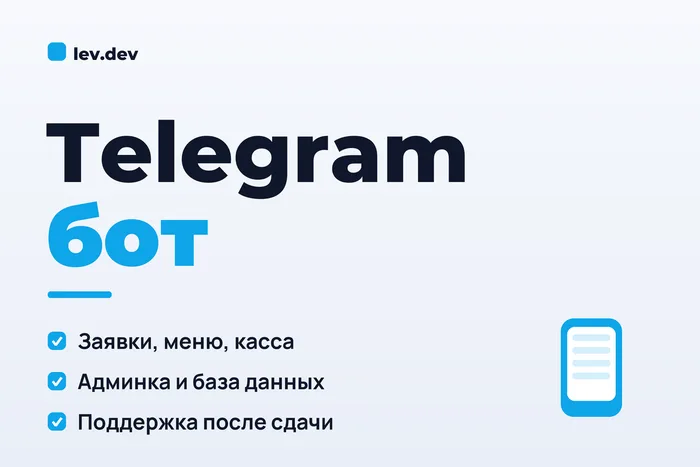

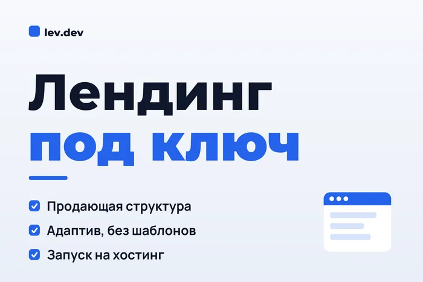

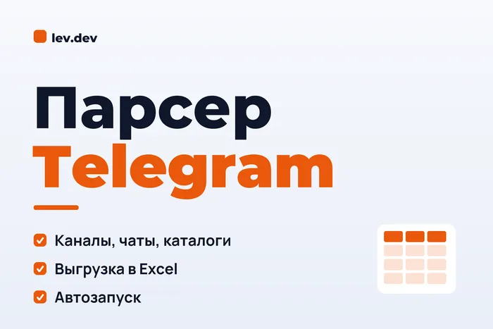

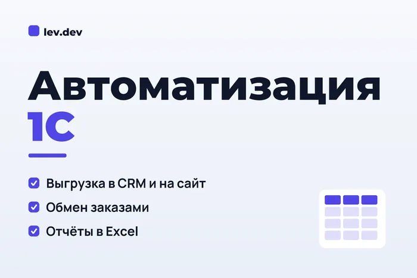

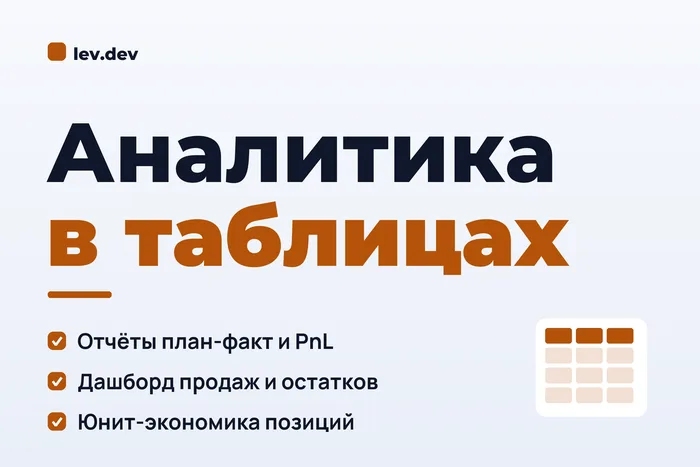

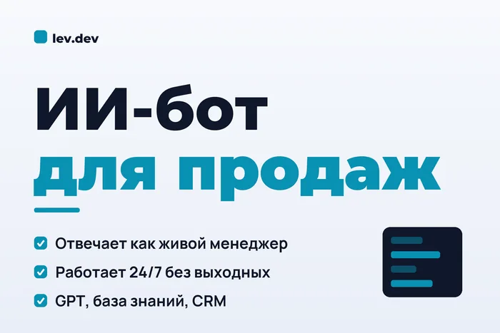
Портфолио-сайт: зачем он нужен и как я его оформляю
Зачем нужно портфолио
Мой сайт-портфолио: lev-dev-tech.github.io. Он нужен не для красоты, а чтобы клиент за пару секунд понял: я уже делал то, что ему нужно, и справился.
Сайт стоит на бесплатном хостинге GitHub Pages. За сервер и домен я не плачу ни рубля, и ты можешь так же: собираешь страницу с Claude Code, выкладываешь на GitHub, и через минуту у тебя рабочая ссылка для откликов.
Ниже - как сайт выглядит сейчас. Нажми на картинку, чтобы посмотреть, как он листается.
Подробнее уже разбирал в каналеПервый сайт за вечер и бесплатная публикацияt.me/levvddev/37Структура карточки кейса
Каждый кейс отвечает на вопросы заказчика без воды:
- Задача: что требовалось сделать.
- Что сделал: конкретные шаги и модули.
- Результат: чего добились, лучше в цифрах.
- Стек: технологии и сервисы.
Никаких пустых заглушек и картинок с чужими брендами. Покупатель хочет видеть реальную работу.
Как это выглядит на практике
Lead Radar, мой радар заказов. Задача: находить заказы в Telegram-каналах и сразу готовить отклики. Сделал фильтр отсева, разбор по 8 категориям, отклики через Claude API, закрытый дашборд и автозапуск на GitHub Actions без своего сервера. Результат: заказы собираются каждые 3 часа, повторы отсекаются сами. Стек: Python, Telethon, Claude API, GitHub Actions.
Подробнее уже разбирал в каналеКак я сделал сервис, который сам находит мне заказыt.me/levvddev/21Перенос магазина на 1С-Битрикс. Задача: перенести магазин на 11 000 товаров на облачный сервер и починить то, что мешало работе. Провел аудит, снял блокировку дисковой квоты, освободил 32 ГБ кэша (диск с 88 до 43%), выпустил SSL без простоя. Результат: ошибка 500 устранена, магазин работает стабильно.
Подробнее уже разбирал в каналеТри живых проекта: магазин, фитнес-клуб и отчеты WBt.me/levvddev/30
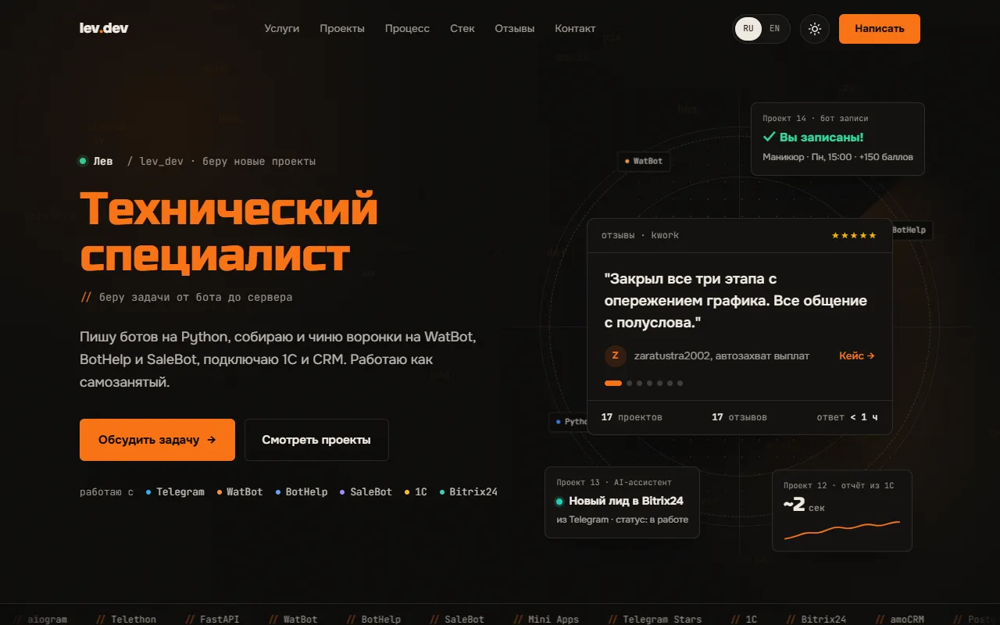


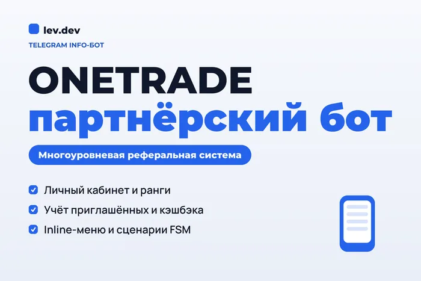
Мои кейсы
Часть проектов из портфолио. Все - реальные заказы. Нажми на любой кейс, чтобы посмотреть поближе, полные описания с задачей, результатом и стеком - на сайте lev-dev-tech.github.io и в портфолио на Kwork.

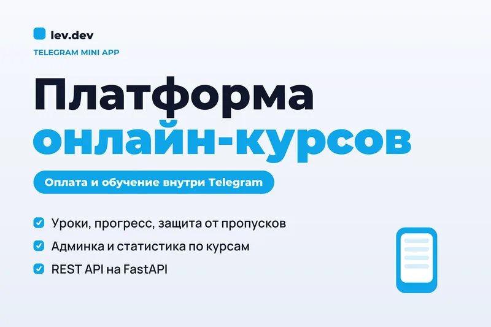
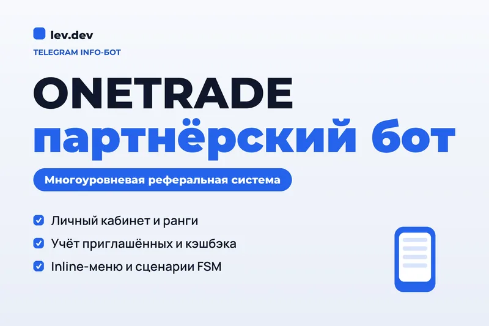
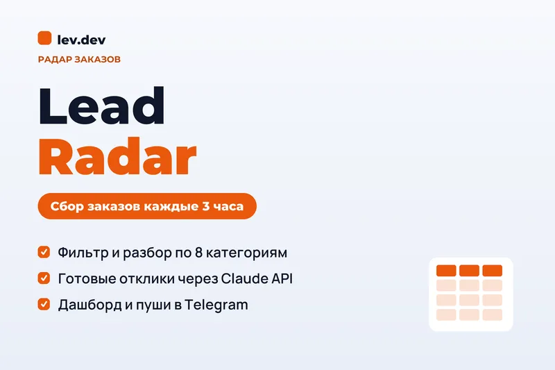

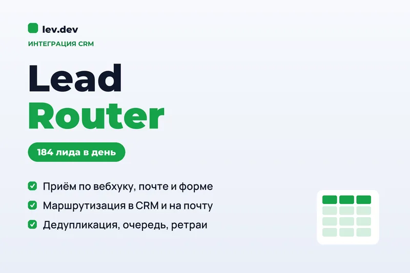

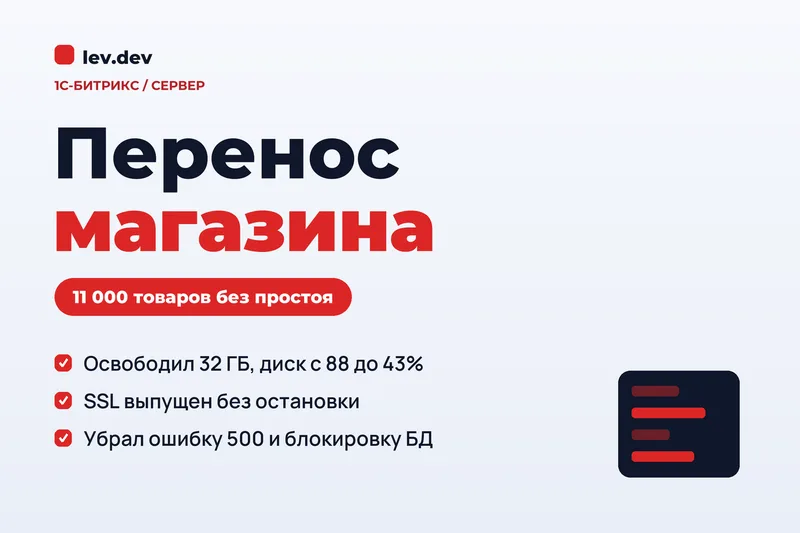

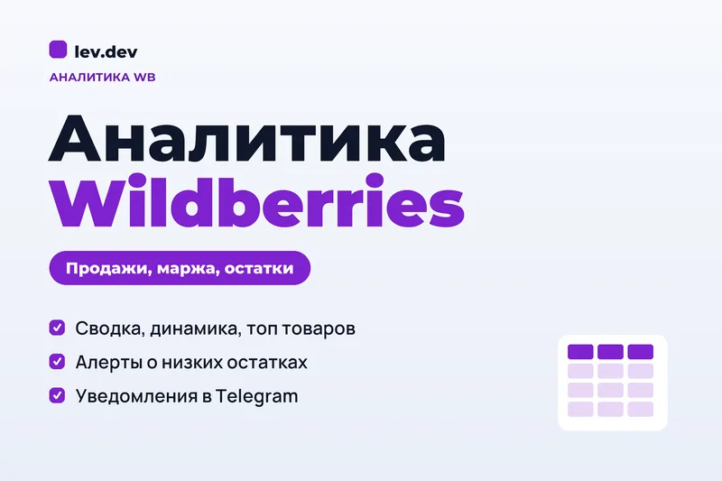

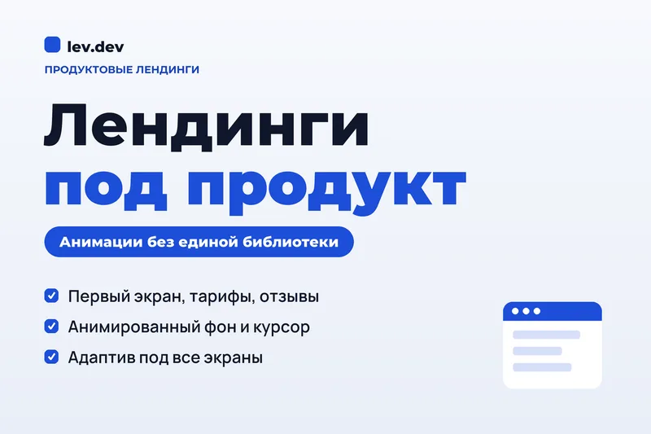

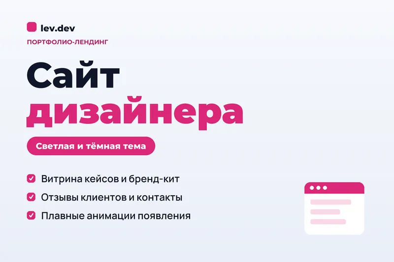

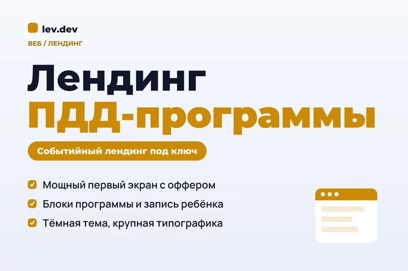
Где брать заказы и как писать отклик
Два источника, и оба нужны
Kwork - копит рейтинг и приносит заказы сам, пока ты спишь. Не забывай про него, даже когда пошли клиенты из Telegram. Новые кворки выкладывай не пачкой за один день, а по 1-2 в неделю в течение месяца: профиль все время свежий, а кворки не тонут в выдаче. Следи, на каком ты сейчас уровне продавца и сколько отзывов осталось до следующего.
Telegram-каналы с заказами - быстрые деньги без комиссии. Заказчик пишет пост в канал и договаривается с тем, кто первым написал толковое сообщение в личку. Заказы разлетаются за минуты.
Подробнее уже разбирал в каналеГде брать первые заказы, если ты пока никтоt.me/levvddev/36Какие заказы брать
Разовые задачи под сдачу: бот, лендинг, парсер, интеграция, воронка. Там понятно, что сдать и за что платят. "В команду на постоянку", оклад и график - мимо, это найм, а не проект.
Доведи клиента до оплаты
Мало получить ответ, надо, чтобы человек реально заплатил. Отвечай быстро, уточни задачу одним-двумя вопросами, назови цену и срок и сразу предложи следующий шаг: "Если подходит, начну сегодня, после предоплаты". Чем дольше переписка висит без конкретики, тем выше шанс, что клиент уйдет к другому.
Структура отклика
Заказчику за час пишут 20-30 человек с "могу сделать, пиши в личку". Рабочий отклик - 600-900 знаков, три абзаца между приветствием и портфолио:
- Первый: опыт в такой же задаче и дедлайн, если он есть.
- Второй: сценарий заказчика своими словами и один реальный кейс. Прозой, без списков.
- Третий: один-два вопроса, которые влияют на цену, и ориентир по стоимости.
В конце ссылка на портфолио lev-dev-tech.github.io и "Готов обсудить детали". Без имени собеседника и без благодарностей, сразу по делу.
Подробнее уже разбирал в каналеКак общаться с клиентами, чтобы закрывать сделкиt.me/levvddev/20Цены для новичка
Пиши цену чуть ниже рынка, на 1-2 тысячи от средней, и всегда "от". Если заказчик сам назвал бюджет, не торгуйся вниз, а пиши, что его ориентир подходит.
Ориентиры цен для старта
в рублях, за проект
Клиенты, деньги и ошибки
На старте бери меньше денег
Люди не доверяют специалисту, у которого мало отзывов и опыта. Это нормально, я бы тоже не доверил. Поэтому первые заказы бери дешевле рынка: так клиенту проще рискнуть, а у тебя появляются отзывы и кейсы. Цену поднимаешь, когда за спиной есть 5-10 довольных клиентов.
Второе, на что смотрят, - как ты общаешься. Медленные ответы, путаница и "щас, подождите" отпугивают сильнее, чем высокая цена.
Клиент платит не за бота
Клиент платит за рутину, которую ненавидит делать руками. До любой цены я задаю пять вопросов:
- Что сейчас делаете руками и сколько времени это съедает?
- Где теряете клиентов или деньги?
- Какими сервисами уже пользуетесь: CRM, таблицы, оплата?
- Кто будет пользоваться результатом каждый день?
- Как поймем, что все работает?
Как я называю цену
- Смотрю, сколько берут другие за такую же задачу.
- На старте ставлю ниже рынка, но не в ноль. Бесплатно ценят меньше всего.
- Называю цену "от" и уточняю, когда понял задачу.
- Всегда пишу срок: "6 000 ₽, 2-3 дня" звучит увереннее, чем просто цифра.
- Беру предоплату, хотя бы половину.
Как писать клиенту
Коротко и по делу, как живой человек. Скобка вместо смайла смягчает: "Сделаю)", "Исправил)". Никогда не пиши "готово", пока сам не проверил результат. Накосячил - скажи сразу и предложи, как исправишь. Клиенты уходят не из-за ошибки, а из-за молчания после нее.
Подробнее уже разбирал в канале7 принципов общения, которые закрывают сделкиt.me/levvddev/20Ведение - это стабильные деньги
После сдачи предлагаю сопровождение: слежу, чтобы все работало, вношу мелкие правки, отвечаю на вопросы. Сейчас у меня 4 проекта на ведении, и каждый месяц есть деньги, которые не надо искать заново.
Что пишут мои клиенты
17 отзывов на 5 звезд, ни одного отрицательного. Это не скриншоты из ниоткуда: все отзывы ниже оставлены на Kwork, их можно открыть и проверить в моем профиле. Те же отзывы собраны на моем сайте.
Еще часть клиентов пишет отзывы просто в личные сообщения. Сейчас я веду 4 проекта на постоянной основе, и никто не жалуется. Обрати внимание, за что хвалят: скорость, понятность, "работает". Не за код.
★★★★★"Быстро. Раньше срока. Недорого. За разумную цену. Без суеты и лишних вопросов. Была интересная задача по автоматизации процесса выборки. Закрыл все три этапа с опережением графика. Все возникающие вопросы подкручивал оперативно и творчески. Не пришлось ничего разжевывать. Все общение с полуслова. Не пожалел. Рекомендую."
★★★★★"Все супер!"
★★★★★"Отличный продавец, все супер!"
★★★★★"Работает! Вы гений информатики, такую красоту сделали) За день починили то, что я не могла сделать месяц. Спасибо вам огромное!"
★★★★★"Очень довольны работой Льва по настройке ИИ-ассистента! Всё сделал очень быстро, качественно и внимательно к нашим задачам. Было действительно приятно работать - всё понятно, оперативно и без лишних сложностей. Спасибо, Лев! Обязательно обратимся ещё раз и будем рекомендовать!"
★★★★★"Всё прошло отлично! Сложная задача выполнена, рекомендую к сотрудничеству!"
★★★★★"Хороший специалист, оперативно сделал скрипт который был мне нужен!"
★★★★★"И вновь обратился к данному специалисту за решением своей задачи. Всё сделано точно в срок и ровно так, как и договаривались по ТЗ. Благодарю вас!"
★★★★★"Делали связку для забора данных из 1С:Розницы в PostgreSQL, чтобы отцепиться от монопольной зависимости. Всё прошло непросто, но главное - в итоге всё получилось. Рекомендую исполнителя как ответственного и грамотного."
★★★★★"Обратился к Льву за сайтом-портфолио. Проект сделал очень оперативно, при этом качество не пострадало - всё выглядит дорого и современно. Приятно работать с профессионалом."
★★★★★"Лев, отличный исполнитель! Возникла необходимость перенести сайт на облачный сервер, так как на старом закончилось место. Лев, быстро и качественно всё настроил, проверил работу сайта и всего административного функционала. Всё работает отлично. Рекомендую!"
★★★★★"Безупречный исполнитель. Правило трёх "О": оперативно выполняет заказ, очень вежливо и грамотно общается, передавая суть всех технических деталей. Отлично сделанная работа. Если хотите, чтобы заказ был выполнен в срок и вас понимали с полуслова - обращаться только к piwhip!"
★★★★★"Была задача сделать Инфо-Бота, продавец справился на УРА!! Уловил ход мыслей и разложил всё по полочкам - насмотреться не могу. Однозначно рекомендую Льва как отличного программиста, который превзошёл мои ожидания!"
★★★★★"Всё отлично, продавец вежливый, быстро ответил и сделал работу."
★★★★★"Нужно было сделать срочно бота в Telegram - человек сделал всё за 3 часа, всё работает. Советую!"
★★★★★"Спасибо, быстро разработал полностью рабочего бота под ТЗ."
★★★★★"Очень хороший, вежливый продавец! Отлично написан текст, соответствует ТЗ. Очень быстро, спасибо."
План на первый месяц
Неделя 1. Инструменты
- Разберись, как ставить задачу нейросети: роль - задача - контекст - формат - пример.
- Поставь Claude Code и сделай в нем любую маленькую задачу до конца.
- Ничего не покупай, кроме подписки. Остальное на старте бесплатно.
Неделя 2. Портфолио
- Открой каналы с заказами и найди вакансию, которая тебе по силам.
- Отклик писать не обязательно. Просто скажи Claude: "сделай мне проект по этому заданию" и доведи его до рабочего вида.
- Забирай результат себе в портфолио как первый рабочий кейс: скрин и три строки - задача, что сделал, что это дает бизнесу.
- Повтори 2-3 раза и выложи на бесплатный сайт-портфолио.
Неделя 3. Первые отклики
- Заведи профиль на Kwork и выложи первые кворки, остальные - постепенно в течение месяца.
- Бери простые заказы на Kwork за 500-1000 рублей ради первых отзывов.
- Параллельно 3-5 толковых откликов в день в каналах с заказами.
Неделя 4. Первые платные заказы
- Делаешь, проверяешь сам, сдаешь в срок.
- Сразу открывай самозанятость. Многие компании, особенно крупные, работают только через нее и просят чек.
- Просишь отзыв, предлагаешь ведение и добавляешь кейс в портфолио.
Чек-лист перед каждым заказом
- Понял, какую рутину убираю, и записал ответы клиента.
- Назвал цену "от" и срок, взял предоплату.
- Проверил результат сам, прежде чем написать "готово".
- Сдал, попросил отзыв, предложил ведение.
Что дальше
Это простой гайд, чтобы ты понял путь целиком. Дальше будет глубже: я готовлю подробные разборы каждого шага и курс, где покажу на живых проектах, как собирать ботов, сайты и интеграции и доводить клиента до оплаты. Первыми о нем узнают в канале.
Кстати, этот гайд, как и мой сайт-портфолио, стоит на бесплатном хостинге GitHub Pages. Он не стоил мне ни рубля, и ты можешь так же: старт в этой профессии почти не требует вложений.
Пока ждешь - в канале уже лежат разборы инструментов, откликов и моих проектов. Портфолио: lev-dev-tech.github.io
Если гайд помог - перешли его другу, который давно хочет зарабатывать на нейросетях 🤍